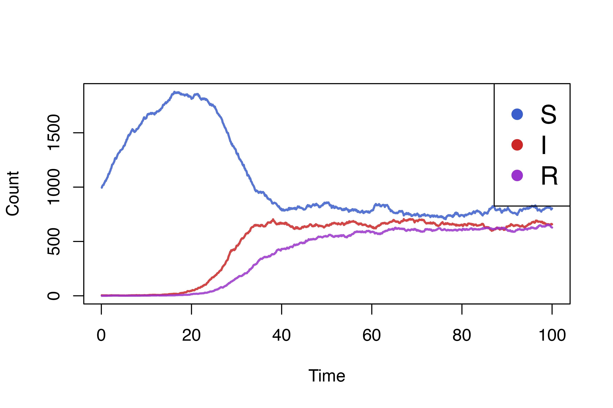

This tutorial will present a toy model for simulating infectious disease in populations which change in size. We will build on the SIR model we created in the first tutorial to show how to model a growing and shrinking population.
As of individual v0.1.8, all variables and targeted events can be extended and shrunk. Extending a variable requires the user to specify new values to add to the end of the variable. This can be used to model births in a population. Shrinking a variable requires the user to specify which indices to remove, the indices of subsequent values will be shifted downwards to replace the removed element. This can be used to model deaths or displacement from a population.
Targeted events can similarly be resized to match a changing
population. You can simply add new individuals with
$queue_extend. If you would like to schedule the event for
new individuals, you can use $queue_extend_with_schedule
with a vector of delays to make sure the event is triggered for new
individuals.
Resizing updates, shrinking and extending, are queued until after all processes and event listeners are executed and are applied after other updates. All the shrink updates for a variable or event are combined and are applied before extend updates. This ensures that the indices used to shrink a variable are the correct size for the variable. After which, extension updates are applied in the order they were called.
From a performance perspective, shrinking updates should be used sparingly, since the re-indexing of a variable can be more computationally expensive than other updates. Consider applying shrinking updates over longer intervals instead of every time step if performance becomes an issue for your model.
Let’s try to model a system with a constant birth rate and the probability of death each time step is uniform for each individual.
birth_rate <- 2
death_rate <- .001
birth_process <- function(t) {
n_births <- rpois(1, birth_rate / dt)
health$queue_extend(rep('S', n_births))
recovery_event$queue_extend(n_births)
}
death_process <- function(t) {
pop_size <- health$size()
deaths <- sample.int(pop_size, rbinom(1, pop_size, min(death_rate / dt, 1)))
health$queue_shrink(deaths)
recovery_event$queue_shrink(deaths)
}We can now add these processes to our previous model and plot the new results.
simulation_loop(
variables = list(health),
events = list(recovery_event),
processes = list(
infection_process,
recovery_process,
birth_process, # new process to introduce S into the population
death_process, # new process to randomly remove individuals from the populations
health_render_process
),
timesteps = steps
)